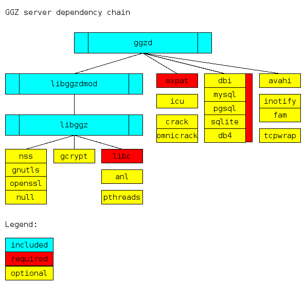

GGZ Gaming Zone Server Documentation
Revision: 0.4Date: 05.01.2007
Author: Josef Spillner <josef at ggzgamingzone dot org>
This document introduces the design of the GGZ server (ggzd) and explains how it works. Additional reading is suggested in the GGZ Gaming Zone Database document and the GGZ Hosting Guide. The GGZ Protocol Specification also contains server-related information.
Server structure and properties
The GGZ Gaming Zone server, named ggzd, is a Unix daemon written in C. It handles connections from (GGZ) clients in multiple threads, and launches games as external processes, with whom it also keeps a connection. Data received from either the clients or the game servers is passed to the respective other connection and/or stored in its database.
It consists of multiple subsystems and links to several static and dynamic libraries. It is important to know that many of these libraries are optional, and they enable ggzd to offer more features, if the corresponding settings have been activated in the main configuration file.
The static libraries reside with ggzd and are also used by other programs: the database abstraction library libggzdb, which is used by ggzduedit to manually manipulate player entries, the game server communication library libggzdmod, used also by the games themselves, and libggzmeta to publish information into the GGZ metaserver, also used by tools such as telggz or metacle to query those entries.
Further dependencies include libggz, expat, gettext and optionally howl or avahi, plus (also optional) fam or inotify. Additionally, depending on the database type, a database client library will be needed, too. The libggz library is mainly used for memory allocation, networking code and security handling (both hashing and encryption). The XML protocol handling is the task of expat, while gettext is used to display translated messages. Either howl or avahi can be included to announce the service on a local network, where it can be detected by a GGZ core client, making use of Zeroconf broadcasts. Either fam or the kernel-based inotify mechanism can be used to detect changes to the room configuration, leading to the sending of updates to the connected clients. The two latter options and the database backend are collectively known as 'zeroconf', 'reconfiguration' and 'database' subsystems.
Further 'soft' dependencies include a portmap daemon and the fam daemon in case of FAM being selected for reconfiguration, and a GGZ metaserver if game information is published there in addition to zeroconf. In case of using a SQL database backend, the matching SQL server must also be running before ggzd starts.

The database can either be embedded or running as an external process, even on another host. Supported databases include DB4, SQlite, MySQL and PostgreSQL. With the DBI interface, a number of databases can be used without recompilation of ggzd.
The connections to the clients and to the game servers are always using TCP/IP, although the latter ones are restricted to local connections.
Initialization
When ggzd starts up, it will read command line arguments first, and configuration files second. Depending on the configuration, a message of the day file (MOTD) as well as the game rooms and game type description files will be read in. It will then open the log files, and fork itself into the background. There are still some smaller tasks to do before the service can be activated: It announces the service to the LAN (optional), initializes its TLS library wrapper (optional), sets up a directory change watcher/monitor (optional) and binds to the configured port. From then on, clients are able to connect.
The server will run in the foreground if the --foreground option has been given to it, which is very useful for debugging. Logging can happen to a configured log file, and (in addition) some log types can be given on the command line to appear on stdout, like ggzd -F --log=all. The types are all documented in the configuration file. The server compile-time configuration can be shown with --specs. Additional settings are internal to the source code and include the hard limits on the maximum number of game types, the maximum length of user names and the like.
Work model

During the connection period of a client, there are a number of events which can occur. The first one is to handle the login procedure, which might require player authentication or registration. The second is to handle player room changes and chat messages. The third is to handle games, which means launching a game server, putting the player (and all those who join) at the table, and receive the game result afterwards, which might involve storing them into the database.
In addition to the database, which is under complete control of ggzd, each game is assigned a private data directory which can be used to save game information. This includes savegames, to which only the path is stored in the ggzd database.
The internal work model of ggzd is such that for each connection, a new thread is created, called the player thread. Similarly, each launched table gets a thread on its own (the table thread), while each game server runs as a separate process. For each game server, there is exactly one table within ggzd.
Games
The GGZ server launches games through the GGZ-side interface of the ggzdmod library. Games use the game-side interface to this library in order to register events and send requests.
Debug messages from game servers are sent to the GGZ server, where they are processed according to the GGZ server's debugging policy. Likewise, statistics reports at the end of a game end up in ggzd's database, whereas savegames are stored within the directory for embedded databases on disk.
Permissions
The GGZ server is aware of the concept of privileges. Depending on the status of a player (anonymous, registered, host or administrator), actions might or might not be possible. In general, only administrators may broadcast messages to all rooms and enter restricted rooms, and only registered users (including admins) may get entries in the statistics database, although anonymous users are registered there in the participation list.
The management of privileges can to some extent be handled directly over the network by already privileged players, whereas for detailed settings, the ggzduedit tool is necessary. Refer to the GGZ Hosting Guide for details on ggzduedit and to the core clients documentation for details on how to administrate from within a core client.